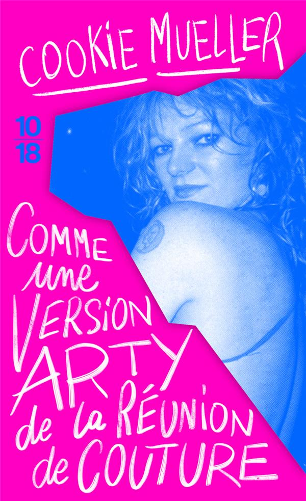

Roman à la fois satirique et historique, Les services compétents nous raconte une page de la dissidence soviétique au tournant des années 60. Le lieutenant Ivanov, un fonctionnaire somme toute sympathique des services secrets, y enquête sur un mystérieux écrivain publié en France sous le pseudonyme d’Abram Tertz. Les textes de ce dernier, qui ironisent notamment à propos du réalisme socialiste, sont jugés antisoviétiques et il s’agit donc de le faire taire. Sans en avoir l’air, c’est un roman dense en informations qui n’en reste pas moins une histoire d’espionnage fort agréable dans lequel il est aussi beaucoup question de littérature. L’auteur Iegor Gran en profite au passage pour revenir sur des événements dont je n’avais pas connaissance, comme que le massacre de Novotcherkassk ou la torche d’Urta-Bulak (éteinte à coup d’EXPLOSION NUCLÉAIRE). Et puis, comme il s’agit en fin de compte de leur histoire, on note une grande tendresse de sa part pour ses parents Andreï Siniavski et Maria Rozanova, de sacrés personnages.
Sortie : 2020
J’ai découvert Cookie Mueller avec Traversée en eau claire dans une piscine peinte en noir, qui m’avait beaucoup plu. Comme une version arty de la réunion de couture est un livre similaire. Il contient d’une part des textes qui avaient déjà été réunis dans deux recueils américains et des critiques d’art publiées dans le magazine Details d’autre part. Il nous fait suivre des bouts de la vie extraordinairement chaotique de cette actrice/autrice/critique d’art underground (décédée en 1989 à seulement 40 ans). En vrac, je pourrais mentionner le récit d’un job au département des crédits d’un magasin de vêtements, le compte rendu du festival international du film de Berlin de 1983 ou encore les souvenirs d’une colocation hivernale et fauchée dans une maison glaciale. Sans oublier des voyages en Italie qui donnent instantanément envie de se servir un prosecco. Ça se lit avec une grande facilité, même si les critiques d’art peuvent être un peu obscures. Ce sont des textes attachants par une personnalité qui le semblait tout autant, même si je serais probablement mort d’épuisement après deux jours en sa compagnie.
Textes parus initialement dans Garden of Ashes (1990), Ask Dr. Mueller (1997) et le magazine Details / Version française : 2019 (traduction : Romaric Vinet-Kammerer)